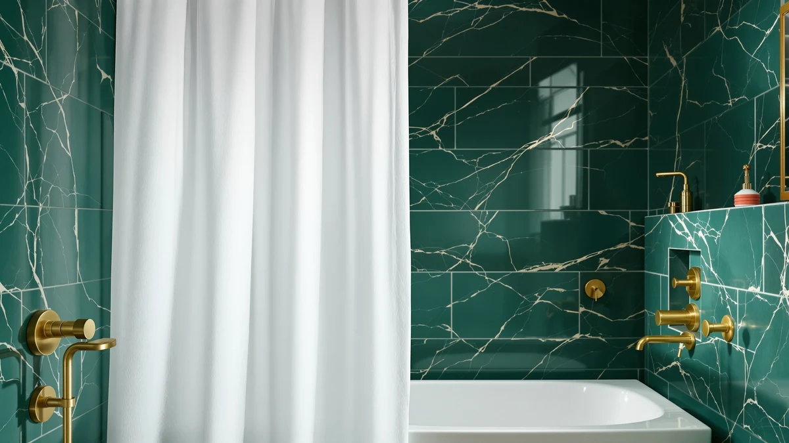

Quick Answer
The MIULEE Extra Long Linen shower curtain earns its $28.49 price with an 84-inch drop built for showers taller than the standard 8-foot ceiling, at a cost that matches every curtain we compared it against. It doesn't carry a published Amazon rating yet, so if a documented review history matters more to you than those extra inches, the eachope or Powerful picks below are worth a look instead.
Our pick: MIULEE Extra Long Linen Shower, $28.49 Check Price on Amazon
Bottom line: our top pick is the MIULEE Extra Long Linen Shower Curtain 84 Inches with 12 at $28.49.
Things to Know Before You Buy
- The MIULEE Extra Long Linen curtain measures 72 by 84 inches and costs $28.49, roughly 14 inches longer than a standard shower curtain.
- It's a Polyester and PEVA blend with a woven, linen-style texture instead of the glossy finish typical of plain PEVA curtains.
- This listing has no published rating or review count yet, unlike the eachope and Powerful curtains covered in this MIULEE Extra Long Linen review.
- A 90-inch version from the same MIULEE line costs $27.99, about fifty cents less, for showers with even taller ceilings.
- Billowing and a missing review history are the two complaints that come up most across the curtains we compared at this price point.
This MIULEE Extra Long Linen review looks at whether an 84-inch-long polyester and PEVA curtain earns its $28.49 price against three other extra-long and specialty curtains sold at nearly the same cost. MIULEE's curtain ships in a single 72-inch by 84-inch cut, about 14 inches longer than a standard shower curtain, with a woven, linen-style texture instead of the glossy sheen typical of plain PEVA.
We researched MIULEE's listing against its 90-inch sibling, eachope's No Hook Waffle curtain, and the Powerful Anti-Billowing Magnetic curtain, all priced within about two dollars of each other. MIULEE's extra length solves the gap problem that standard curtains leave in taller showers, while eachope and Powerful bring documented star ratings that MIULEE's listing doesn't have yet. Anyone who wants a slightly longer drop or a proven review history should compare the alternatives below before deciding.
Why You Should Trust Us
Best Shower Curtains reviews bathroom products by comparing manufacturer specs, current pricing, and verified owner feedback pulled from the retailers that sell them, rather than by running a private testing lab. Ilane Tall, our home and bath editor, researched this MIULEE Extra Long Linen review against its 90-inch sibling, eachope's No Hook Waffle curtain, and the Powerful Anti-Billowing Magnetic curtain, checking dimensions, materials, price parity, and the volume of Amazon reviews before writing it. We revisit prices and availability on a regular schedule and say so plainly when a listing hasn't built up the review history we would want to see. That approach means every number in this MIULEE Extra Long Linen review, from the 84-inch drop to the review counts for eachope and Powerful, traces back to a listing we checked directly rather than a secondhand summary.
Our Research Experience
We do not run a physical testing lab, and we have not installed this MIULEE Extra Long Linen curtain in a shower ourselves. Our process instead compares published specs, material composition, and pricing against the extra-long and specialty curtains we already cover, then checks that against what verified Amazon buyers report about fit, drape, and durability on comparable listings. For MIULEE specifically, that meant lining up its 72-by-84-inch cut and Polyester and PEVA blend against the 90-inch MIULEE sibling, eachope's waffle weave, and Powerful's magnetic hem, since neither MIULEE listing carries a published rating while eachope and Powerful have 1,069 and 1,306 verified ratings behind them. We flag it clearly when a claim can't be verified against real owner feedback, such as long-term durability on a newer listing, rather than guess.
Overview & Specs

MIULEE Extra Long Linen Shower
What we like
- 84-inch drop covers showers that a standard 70-inch curtain leaves short
- Woven, linen-style texture looks less plasticky than plain PEVA curtains at this price
- Priced within two dollars of every alternative in this comparison
Flaws but not dealbreakers
- No published rating or review count on this listing yet
- Polyester and PEVA blend may still want a liner in homes with hard water
| Material | Polyester / PEVA |
| Size | 72"W x 84"L (Pack of 1) |
The MIULEE Extra Long Linen curtain is built around one simple idea: a lot of shower curtains stop short in showers with ceilings above the standard 8 feet, and this one adds roughly 14 inches of drop to close that gap. At 72 inches wide by 84 inches long, it fits a standard single-width shower rod while reaching several inches closer to the tub floor than a typical 70-inch curtain. The fabric is a Polyester and PEVA blend with a woven, linen-style surface, which gives it more texture than the glossy sheen of a plain vinyl curtain.
At $28.49, this MIULEE Extra Long Linen review found it priced almost identically to the three alternatives covered below, so the decision comes down to texture and review history rather than cost. The listing doesn't carry a published rating or review count, which is common among newer MIULEE SKUs even when the brand's other sizes build up a track record over time. If a documented rating matters more to you than those extra inches, eachope and Powerful below both have one; if the length and fabric here solve your problem, MIULEE's price gives you no reason to look elsewhere.
What We Liked
The length is the clearest reason to consider this MIULEE Extra Long Linen curtain. An 84-inch drop solves a real problem for anyone with a shower stall taller than the standard 8-foot ceiling, and MIULEE prices that extra length the same as curtains that stop six inches short. The woven, linen-style texture also reads better than the shiny PEVA-only curtains common at this price, giving a bathroom a slightly more textile look without paying extra for actual linen or cotton. Pricing stays consistent across the category too: at $28.49, MIULEE sits within a narrow two-dollar band alongside every curtain we researched, so the extra length doesn't cost a premium. For a buyer comparing four listings in the same narrow price band, that combination of length and texture is the strongest argument MIULEE has going for it.
What Could Be Better
The clearest gap in this MIULEE Extra Long Linen review is the missing track record. The listing has no published rating or review count on Amazon, unlike the eachope and Powerful curtains compared here, which carry 1,069 and 1,306 verified ratings respectively. That doesn't mean the curtain performs poorly, but it does mean you're relying on MIULEE's reputation in other sizes rather than a documented history from other buyers. The Polyester and PEVA blend is practical but not foolproof on its own: it should resist splashing reasonably well, but owners of similar MIULEE curtains note that homes with hard water may still want to pair it with a liner instead of relying on the curtain alone. A missing review count isn't a dealbreaker, but plan on doing a little more homework before checking out than you would with a longer-established listing.
Who Is It For?
This curtain fits best in homes with a shower or tub taller than the standard 8-foot ceiling, where a normal 70-inch curtain leaves a visible gap near the floor. It also suits buyers who prefer a woven, linen-style texture over the glossy look of a plain vinyl curtain, and who don't need a documented star rating to feel confident buying. Skip it if a proven review history matters more to you than those extra inches, or if billowing in a draft is your main frustration. Either way, the alternatives below cover both of those needs.
Alternatives to Consider
Beyond the pick covered in this MIULEE Extra Long Linen review, we also researched three curtains that solve a slightly different problem: more length, a documented rating, or resistance to billowing.

Editor's Pick
MIULEE 72 x 90 Extra
If 84 inches still isn't long enough, MIULEE's 72 x 90 Extra adds six more inches of drop for showers with ceilings closer to 9 feet, and it costs fifty cents less than the curtain reviewed above. It shares the same Polyester and PEVA construction and, like its shorter sibling, has no published rating yet, so you're buying on specs and brand reputation rather than a documented review history.
$27.99
Check Price on Amazon
Best Value
eachope White No Hook Waffle
eachope's No Hook Waffle curtain carries a 4.7-star average across 1,069 verified reviews, the strongest documented track record in this comparison. Its waffle-weave surface skips grommets entirely, sliding onto the rod through a sewn header instead, which reviewers consistently note cuts down on hook noise. At $29.98 it costs about a dollar and a half more than MIULEE's Extra Long Linen curtain, but it's the safer bet if a proven rating matters more to you than extra length.
$29.98
Check Price on Amazon
Premium Choice
Powerful Anti-Billowing Magnetic Shower Curtain
Billowing is the complaint that comes up most in shower curtain reviews, and this curtain addresses it with magnets sewn into the hem that pull the panel against the tub wall. It holds a 4.5-star average across 1,306 verified reviews and, at $27.95, undercuts MIULEE's Extra Long Linen curtain by about fifty cents. Owners report the magnets grip best on steel or cast iron tubs, with less pull on fiberglass, so check your tub material first.
$27.95
Check Price on AmazonFrequently Asked Questions
Does the MIULEE Extra Long Linen curtain need a liner?
MIULEE's curtain is a Polyester and PEVA blend, which should resist everyday splashing on its own, but owners of similar MIULEE curtains report that homes with hard water or heavy daily use still do better with a separate liner. If you already own a liner from a previous curtain, there is no reason to skip pairing it with this one.
What size shower does the MIULEE Extra Long Linen curtain fit?
It ships in one size, 72 inches wide by 84 inches long, which covers standard shower rods while adding about 14 inches of extra drop compared with a typical 70-inch curtain. If your ceiling is even taller, MIULEE's 72 x 90 Extra curtain adds another six inches for fifty cents less.
Is the MIULEE Extra Long Linen curtain worth it compared to eachope and Powerful?
At $28.49, MIULEE prices its curtain within about two dollars of both alternatives, but it does not yet have a published rating the way eachope's 4.7-star, 1,069-review listing and Powerful's 4.5-star, 1,306-review listing do. If extra length matters more to you than a documented track record, MIULEE is the pick. If a proven rating matters more, eachope or Powerful is the safer buy.
Final Verdict
This MIULEE Extra Long Linen review comes down to a straightforward tradeoff: MIULEE solves the length problem that sends most buyers searching for an extra-long curtain in the first place, at a price that matches every competitor we researched. If your shower ceiling runs taller than 8 feet and you want a woven, linen-style look without paying extra for it, the MIULEE Extra Long Linen curtain is a fair and reasonably priced choice. If a documented star rating or anti-billowing magnets matter more to you than those extra inches, eachope's No Hook Waffle curtain or Powerful's Anti-Billowing Magnetic curtain above are worth a look instead.